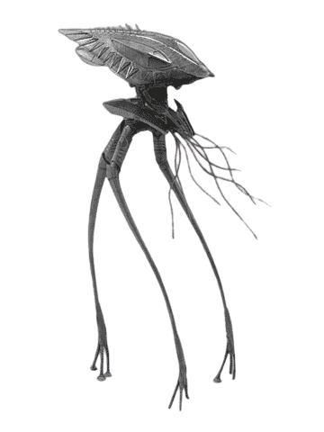

Inspiración
La guerra de los mundos
Se licenció en 1968 como ingeniero en la Universidad de Tokio (Tokyo Denki University 東京電機大学 (, Tokyo denki daigaku?)), uniéndose a la empresa Taito Corporation Japan un año después. Su primer juego completo fue el Soccer, en 1972, un juego arcade muy similar al Pong, pero que se convirtió en el primer videojuego comercializado en Japón de producción y desarrollo completamente nacional.
Diseñó Space Invaders, uno de los primeros y más importantes videojuegos de la historia, lanzado en 1978 en Japón por la empresa Taito Corp.
